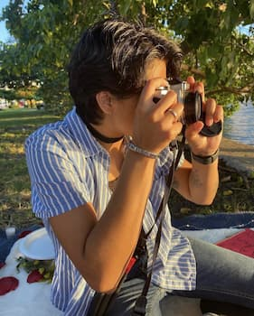

Hello, my name is Natessa Belen Perera, I am twenty-four years old. I am of Hispanic and Asian decent as my mother is Costa Rican and my father is Sri Lankan. I am currently working on a Warner Bros. show as an office assistant and have my Bachelors degree in Public Reations, Advertising, and Applied Communications. I am currently pursuing my Masters Degree in Political Communication.
I typically work seven days a week at 70 hours during that week so when I have time to myself I usually enjoy staying home and spedning time with my little six month old kittens, Loki and Cairo. I also enjoy spending my time playing my guitar, going to the beach, taking photos on my Nikon FE film camera, or engaging in some outdoor activity.
I enjoy spending quality time with my friends and family and surrounding myself with fairlty open-minded and postivie individuals. I enjoy movies and shows that revolve around the DC characters or anything suspenseful. I love good food and am always ready for anything. I also very much love getting tattoos with good company and working in film.